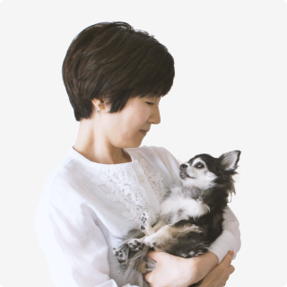

メンバー
代表取締役
池田賢一
立教大学観光学部卒業後に旅行系ベンチャー企業を設立。
一部上場企業に事業売却。
売却先で2年間勤務後、ベンチャーキャピタルに転職。
2020年8月27日、30歳の節目で株式会社Grief care Techを設立。
過去の原体験と供養方法への違和感、
そして偶然の会話から、
Yuishu事業アイデアに辿り着く。

プロダクトデザイナー
中井英理
大手自動車メーカーでのデザイナー、専門学校講師の経験を経て、
偶然かつ必然の出会いを経てYuishu事業に参画。
老犬チワワの介護と在宅勤務の両立を目指す。
メンバーで最もペルソナに近い立場。
2020年8月に17歳を看取り、いまはてんかん持ちの16歳と暮らす。
グラフィックデザイナー
WT.Ding
2013年に中国から来日。
デザイン専門学校卒業後、Web事業会社でUIデザイン業務に従事。
幼い頃から猫と過ごしてきたため、Yuishu事業に興味を持つ。
今でも中国の実家にガンと闘っている15歳のねこがおり、
日本の我が家にも現在FIPと闘っている1歳未満の猫がいる。